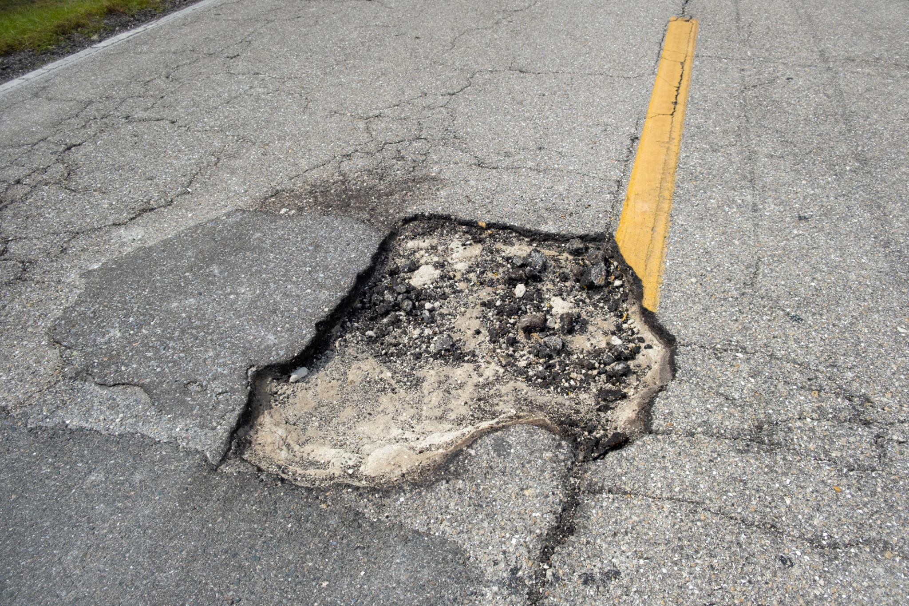
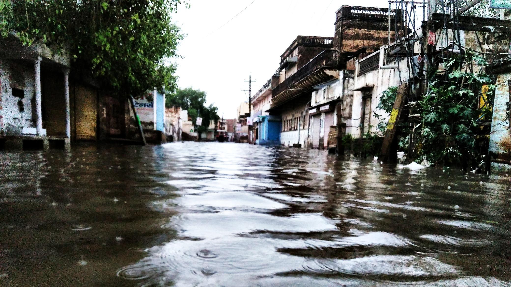
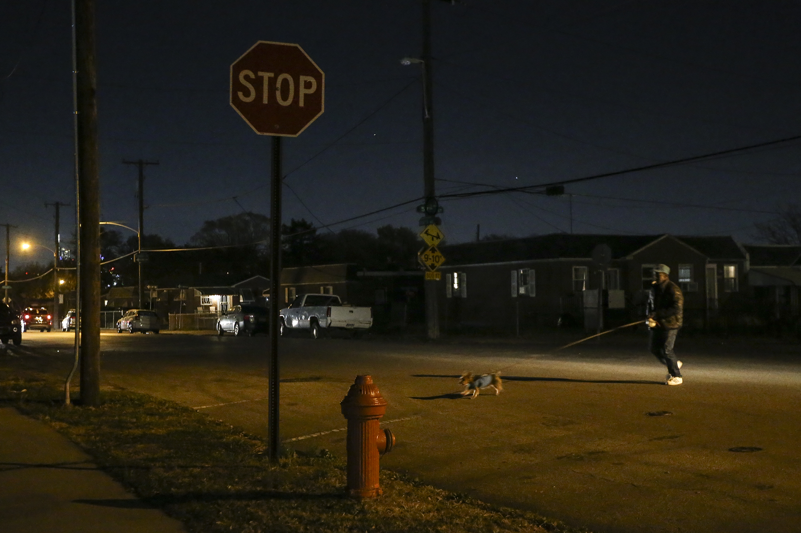

A small issue on the road can quickly turn into a serious hazard if it goes unnoticed. When people report problems as soon as they see them, it helps authorities respond faster and prevent accidents. It’s a simple action that can make everyday travel safer for everyone.

After rain, roads often become difficult to read. Water can hide potholes and damaged surfaces that put both drivers and pedestrians at risk. Early reporting helps address these issues before they cause harm, reducing unexpected damage and improving safety across the city.

A single broken streetlight can turn a familiar road into something unrecognizable. Shadows get deeper, distances get harder to judge. Reporting it might feel small, but it changes how safe that road feels for everyone passing through after dark.
Take action today. Report issues in your area.